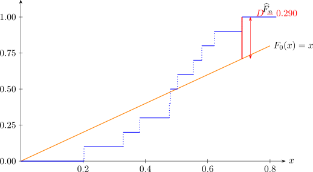

6.5 Practice Problems
Problem 6.1. A random sample of size ten is drawn from a continuous population: \[0.621,\ 0.503,\ 0.203,\ 0.477,\ 0.710,\ 0.581,\ 0.329,\ 0.480,\ 0.554,\ 0.382 .\] Test the hypothesis that the sample came from the Uniform\([0,1]\) distribution. Obtain \(F_0\), \(\widehat {F}_n\), \(D^{+}\), \(D^{-}\) and \(D\); give the critical value at \(\alpha = 0.05\) and state the conclusion.
Show solution
Solution. Hypotheses. \(H_0 : F = F_0\) where \(F_0\) is the Uniform\([0,1]\) cdf, against \(H_1 : F \neq F_0\). Note \(F_0\) is fully specified in advance, with no parameter estimated from the data — which is what makes the tabulated critical values applicable.
The theoretical cdf. For the uniform distribution on \([0,1]\), \(F_0(x) = x\) on that interval. The arithmetic is therefore unusually transparent: the theoretical value at each point is the observation.
Order the sample and tabulate.
| \(i\) | \(x_{(i)}\) | \(F_0 = x_{(i)}\) | \(\dfrac {i}{n}\) | \(\dfrac {i}{n}-F_0\) | \(F_0 - \dfrac {i-1}{n}\) |
| 1 | 0.203 | 0.203 | 0.1 | \(-0.103\) | \(0.203\) |
| 2 | 0.329 | 0.329 | 0.2 | \(-0.129\) | \(0.229\) |
| 3 | 0.382 | 0.382 | 0.3 | \(-0.082\) | \(0.182\) |
| 4 | 0.477 | 0.477 | 0.4 | \(-0.077\) | \(0.177\) |
| 5 | 0.480 | 0.480 | 0.5 | \(\ \ 0.020\) | \(0.080\) |
| 6 | 0.503 | 0.503 | 0.6 | \(\ \ 0.097\) | \(0.003\) |
| 7 | 0.554 | 0.554 | 0.7 | \(\ \ 0.146\) | \(-0.046\) |
| 8 | 0.581 | 0.581 | 0.8 | \(\ \ 0.219\) | \(-0.119\) |
| 9 | 0.621 | 0.621 | 0.9 | \(\ \ 0.279\) | \(-0.179\) |
| 10 | 0.710 | 0.710 | 1.0 | \(\ \ \mathbf {0.290}\) | \(-0.190\) |
The statistics. \[D^{+} = \max _i\left \{\dfrac {i}{n}-F_0\left (x_{(i)}\right )\right \} = 0.290 \quad (\text {at } i = 10),\] \[D^{-} = \max _i\left \{F_0\left (x_{(i)}\right )-\dfrac {i-1}{n}\right \} = 0.229 \quad (\text {at } i = 2),\] \[D = \max \left (D^{+}, D^{-}\right ) = 0.290 .\]

Critical value and decision. For \(n = 10\) at \(\alpha = 0.05\) the two-sided critical value is \(D_{0.05,10} = 0.409\). Since \[0.290 < 0.409,\] we do not reject \(H_0\): the sample is consistent with Uniform\([0,1]\).
Why both \(D^{+}\) and \(D^{-}\) are needed. The empirical distribution function is a step function, so at each observation it jumps from \(\frac {i-1}{n}\) to \(\frac {i}{n}\). The largest gap between \(\widehat {F}_n\) and \(F_0\) may occur immediately after a jump, which \(D^{+}\) measures, or immediately before one, which \(D^{-}\) measures. Taking only one of them would understate the distance — here \(D^{+}\) happens to win, but the maximum deviation of the two occurs at opposite ends of the sample, \(i = 10\) and \(i = 2\).
Problem 6.2. Use the Kolmogorov–Smirnov test, with \(\alpha = 0.05\) and critical value \(0.304\), to test whether the following sample came from the standard normal distribution: \[\begin {array}{rrrrr} 0.36 & 0.92 & -0.56 & 1.86 & 1.74\\ 0.56 & -0.95 & 0.24 & -0.15 & -0.74\\ 0.32 & 0.82 & 0.70 & -0.10 & -1.26\\ -1.06 & 0.15 & 0.55 & -0.48 & -0.44 \end {array}\] State the assumptions of the test.
Show solution
Solution. \(H_0: F(x) = \Phi (x)\) for all \(x\), against \(H_1: F(x)\neq \Phi (x)\) for some \(x\). Order the \(n = 20\) observations and compute \(\Phi \left (x_{(i)}\right )\) from the normal table:
| \(i\) | \(x_{(i)}\) | \(\Phi \left (x_{(i)}\right )\) | \(\frac {i}{n}\) | \(\frac {i}{n}-\Phi \) | \(\Phi -\frac {i-1}{n}\) |
| 1 | \(-1.26\) | 0.1038 | 0.05 | \(-0.054\) | \(0.104\) |
| 2 | \(-1.06\) | 0.1446 | 0.10 | \(-0.045\) | \(0.095\) |
| 3 | \(-0.95\) | 0.1711 | 0.15 | \(-0.021\) | \(0.071\) |
| 4 | \(-0.74\) | 0.2296 | 0.20 | \(-0.030\) | \(0.080\) |
| 5 | \(-0.56\) | 0.2877 | 0.25 | \(-0.038\) | \(0.088\) |
| 6 | \(-0.48\) | 0.3156 | 0.30 | \(-0.016\) | \(0.066\) |
| 7 | \(-0.44\) | 0.3300 | 0.35 | \(0.020\) | \(0.030\) |
| 8 | \(-0.15\) | 0.4404 | 0.40 | \(-0.040\) | \(0.090\) |
| 9 | \(-0.10\) | 0.4602 | 0.45 | \(-0.010\) | \(0.060\) |
| 10 | \(0.15\) | 0.5596 | 0.50 | \(-0.060\) | \(\mathbf {0.110}\) |
| 11 | \(0.24\) | 0.5948 | 0.55 | \(-0.045\) | \(0.095\) |
| 12 | \(0.32\) | 0.6255 | 0.60 | \(-0.026\) | \(0.076\) |
| 13 | \(0.36\) | 0.6406 | 0.65 | \(0.009\) | \(0.041\) |
| 14 | \(0.55\) | 0.7088 | 0.70 | \(-0.009\) | \(0.059\) |
| 15 | \(0.56\) | 0.7123 | 0.75 | \(0.038\) | \(0.012\) |
| 16 | \(0.70\) | 0.7580 | 0.80 | \(0.042\) | \(0.008\) |
| 17 | \(0.82\) | 0.7939 | 0.85 | \(0.056\) | \(-0.006\) |
| 18 | \(0.92\) | 0.8212 | 0.90 | \(\mathbf {0.079}\) | \(-0.029\) |
| 19 | \(1.74\) | 0.9591 | 0.95 | \(-0.009\) | \(0.059\) |
| 20 | \(1.86\) | 0.9686 | 1.00 | \(0.031\) | \(0.019\) |
Hence \[D^{+} = 0.079\ (i = 18),\qquad D^{-} = 0.110\ (i = 10),\qquad D = \max (D^{+},D^{-}) = 0.110.\] Since \(0.110 < 0.304\), \(H_0\) is not rejected: the sample is consistent with the standard normal distribution. The largest gap is just before \(x = 0.15\), where \(\Phi \) has reached \(0.56\) but only \(9\) of the \(20\) observations, \(45\%\), lie below.
Both columns are needed. The empirical cdf jumps at each observation, and the largest gap can occur just after a jump, which \(D^{+}\) measures, or just before one, which \(D^{-}\) measures. Here the answer comes from \(D^{-}\), so computing only \(\frac {i}{n}-\Phi \) would have understated \(D\).
Assumptions. The observations are a random sample of independent values from a continuous distribution. The hypothesised cdf \(F_0\) must be completely specified in advance. Here it is \(N(0,1)\) exactly. Had the mean and variance been estimated from the same data, the tabulated critical values would be too large, and Lilliefors’ modification would be needed.
Questions on this section
Stuck on something here? Ask below and it stays attached to this topic.